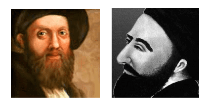
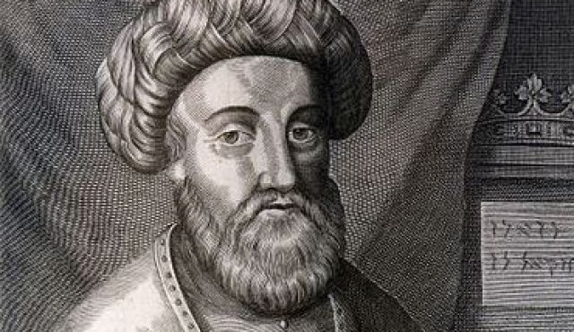
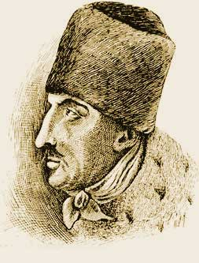

By High Priest Mageson666
Jewish Talmud, Choschen Hamm 388, 15 Happy will be the lost of Israel, whom the Holy One [my note the Jewish Messiah], blessed be He, has chosen from amongst the Goyim, of whom the Scriptures say: "Their work is but vanity, it is an illusion at which we must laugh; they will all perish when God visits them in His wrath." At the moment when the Holy One, blessed be He, will exterminate all the Goyim of the world, Israel alone will subsist, even as it is written: "The Lord alone will appear great on that day!...
Suffering major set backs in Spain and Poland, the Jews reorganized from their losses under rabbinical leaders who came forth and formed a messianic following the start of this momentum was Rabbi Luria a Kabbalistic teacher who was famous for his Lurian Kabala and believed to be the messiah. Luria never wrote down his teachings as was Jewish tradition, he taught them orally to two types those of initiates and adepts. It was not until after his death his students wrote his teachings down in the Lurian Kabala.

Rav Luria
One of the later students of the Kabbalistic system of Luria was Sabbatai Zevi. This character travelled to the Levant were he claimed to be the Messiah of the Jewish Race. This period of history is very revealing as this is the one time the Jews came right out in public with their agenda and intentions and Zevi was believed to be the most recorded Jewish person in history of the time by Gentile sources as well. Which is why Jews are scrambling to always confuse this period of history and leader.

Rabbi Zevi
This also shows the Kabala is the key to Jewish power and power within the Jewish establishment. Zevi spent years in Kabbalistic meditation which included mantra repletion of Kabbalistic formula's such as the fourfold name. And other methods. That are identical to yoga. With mundra's, asana's, breathing techniques, visualizations. The key of kabala is to awaken Shekinah in Malkuth and move it up the other six lower worlds of the first seven to the crown. This knowledge was stolen from Gentiles. However the key of kabala for the individual is based on Shakti energy and moving it up the spine. The Jews stole this from us and damned the Goyim. While keeping it themselves at the top.
In the orthodox Rabbinical movements the leader is a Rabbi who is a Saddak. Meaning he has performed verifiable siddhi's in front of his followers numerous times. And these Rabbi's are the leaders of the Jewish race.
Zevi as Luria before him, demonstrated Siddhi's in public and other Rabbi's stated to as well from his teachings. They claimed to have dreams and visions of Zevi as the messiah. At the high of Zevi's movement over a million Jews were his disciples. And thousands of Jews travelled to the Levant to follow him.
Zevi declared himself Messiah on June 18, 1666, this a Kabbalistic important date. June the 6th month, 18 is the
number of life in kabala and made up of three sixes and 1..666. The number of the sun and bringing the spiritual working into the material.
Zevi ordered all his followers to practice the Lurian Kabala and taught them how to use the power of the mind for Jewish witchcraft and also openly used sex magic with the wife swapping and orgies. This is in the Kabala, the enemy knows the power of sexual energy they repress it for the Gentiles but use this at the top for themselves.
Now this is the revealing part......Zevi crowned his key followers with the crowns of the different European Nations and was preparing for "The Messianic War" in which the Jewish army of Zevi would destroy the nations of Europe and make the Gentiles their slaves. And take Jerusalem from the Sultan and rule as the Messiah a Jewish World Kingdom from his throne in Jerusalem. As this is what the Jewish Messiah must accomplish as the Torah, Talmud and Kabala command. This is what Judaism is about. As the Jewish holy texts state:
Zohar, Toldoth Noah 63b "When the Messiah comes every Jew will have 2800 slaves."
This is what the Jewish Leader must accomplish....
Choschen Hamm 388, 15 Happy will be the lost of Israel, whom the Holy One [my note the Jewish Messiah], blessed be He, has chosen from amongst the Goyim, of whom the Scriptures say: "Their work is but vanity, it is an illusion at which we must laugh; they will all perish when God visits them in His wrath." At the moment when the Holy One, blessed be He, will exterminate all the Goyim of the world, Israel alone will subsist, even as it is written: "The Lord alone will appear great on that day!...
Zevi marched to the Ottoman's capital to demand Jerusalem from the Sultan, to which the Sultan ordered him to convert to Islam or be executed, to which Zevi converted to save himself. This was officially the end of his movement. As this move disillusioned most of his following. However this conversion of him and his immediate following was a ruse. They went underground as the Donmeh Jews. And kept their teachings so secret they would only reveal the actual religion to their children upon turning 14. So as to hide this easier among the greater Gentile community. The Donmeh later were able to accomplish their agenda by forming the Young Turk movement via the Free Mason lodges they set up in Turkey and with this were able to take over the Turkish Empire and this included the Armenian Genocide. The Armenian community was the major obstacle to the Donmeh grab for power so they exterminated them. Upon stealing the vast wealth of the Armenian's as well. This also forced the Turk's to only be able to deal with International Jewish bankers for finances as the Armenian banks were gone. Putting the Turks under their control. The Donmeh sabotaged the Ottman's war effort as the Rothschild's and other Zionists need the Ottoman Empire destroyed to grab the Levant for their Messianic mission of Israel. After the war Atta Turk the leader of the Turkish republic was a Donmeh. They forced in secularization at the time as they didn't want any Imperial resurgence in the region from the Turks. The Donmeh community along with the Rothschild's also created the Saudi regime to gain control of Sunni Islam. The Donmeh still run Turkey.

Rabbi Jacob Frank the actual father of Communism.
Back to Europe another important Rabbinical leader Jacob Frank who was a trained adept in Kabala by several Donmeh Jews who came to Europe. Now this is an important point on how Jews lie, the Jews who talk on this issue claim Frank was "Satanic" and not a Jew somehow anymore because he went against the teachings of Judaism.....Then out of the other corner of their mouth they admit everything he did was in the Talmud and not against it. So he was following the teachings of Judaism as a Jewish leader. The Jews believe Gentiles are dumb and they can lie to you with this type of chutzpa and you being the "dumb goyim brain" won't even notice. Everything Frank did was actually in the Talmud from the black magic to human ritual sacrifices. This is also in the Torah. Moses Hess another loyal Jew in the movement stated they would use Talmudic black magic to bring this agenda forth in his own writings.
Also remember when these Jews talk on this issue what their Jewish law commands of them...
Sanhedrin 59a To communicate anything to a Goy about our religious relations would be equal to the killing of all Jews, for if the Goyim knew what we teach about them, they would kill us openly.
Libbre David 37 A Jew should and must make a false oath when the Goyim asks if our books contain anything against them.
So you can bet these Jews are lying to confuse the Goyim as to the actual nature of Judaism. As this situation with Zevi put them in the hot seat in front of the entire world as he came right out in the open and didn't hide behind the scenes as Jews traditionally do.
Frank declared himself the reincarnation of Zevi and started the Frankist movement. To bring about the Jewish World Order. In 1773, Frank personally met with Mayer Rothschild himself a Sabbatean a follower of Zevi's teachings, Mayer was a Shamash, a personal servant to the Rabbi who raised him and to this day Mayer is given worshipful status by Jewish groups like Chabad. And Frank also met with Adam Weishaupt who's father was a Rabbi and himself Weishaupt was a teacher of Jewish Canon Law at the university of Ingolstadt in Bavaria, Germany. It was at this meeting in 1773 with Rothschild and Weishaupt, Frank came up with the agenda of the infiltration of the Masonic lodges and at this meeting the Illuminati was created. Jacob Frank and Weishaupt created the Illuminati doctrine and Rothschild provided the funds and connections. However it was also Frank that originally put Rothschild into money power along with the Warburgs. Frank had his followers run numerous money operations in Poland and then channelled this money into operations including the money the Rothschild's to the type of sum needed for lending to King's and Princes which got them started in the business.
From here the Jews took over the Masonic lodges and turned them into tools of the Messianic Agenda of the Jewish leadership. The French revolution was documented to have been launched by the Frankist's via their control of the Masonic centers and bankrolled by the Rothschild's and other Jewish money elites. This movement in France called the Jacobin's was the Jewish Golem of the "French" revolution in the next century its name was changed to the Communist League. And two Jews Marx and Hess created the Communism Manifesto. Hess was an open Zionist and the father of Zionism officially. He stated Zionism is about creating a global Jewish government that rules from Israel. They just took the Illuminati ideology of Frank and cloaked it in some new mumbo jumbo. And gave it a name change to Communism.
His [Hess] chief work, authorities agree, was “Rome and Jerusalem” (translated by Meyer Waxman and published in the United States in 1945 by the Block Publishing Co.). He rushed home in 1848, says the translator, from Paris, “taking an active part in the armed resistance of the people.” (page 22) “In 1845, Hess engaged in propagating the Communistic idea and founding societies devoted to its realization, an occupation which led Arnold Ruge to describe him as ‘The Communist Rabbi Moses.”’ (pp. 21-22)
It is stated that, “The fundamental principle of Hess’ thought … is based on the teaching of Jewish Spinoza, of which he was a devoted follower,” but he went further, says the translator, in expounding the “basic unit” of mind and matter, “the basic unity and its various unfoldings.”
Hess also stated, “Judaism has no other dogma but the teaching of the Unity.” (page 44) “… the Rabbis never separated the idea of a future world from the conception of the Messianic reign. Nachmanides insists … upon the identity of … ‘the world to come’ with the Messianic reign.” (page 46)
Extolling the Talmud and delegating Moses to the inferior role given him therein (page 91), the whole cry of Hess was for Jewish world rule from Palestine “between Europe and far Asia … the roads that lead to India and China,” and he told Jewry:
“You have contributed enough to the cause of civilization and have helped Europe on the path of progress to make revolutions and carry them out successfully.” He called for Jews to “March forward!” and stated: “The world will again pay homage to the oldest of peoples.” (pp. 139-40) The “Talmud is the corner-stone of modern” Orthodoxy, (page 143). He looked to black magic, the occultism of Chasidism, which along with Zionism, was to achieve Communist dictatorship.” “The great good which will result from the combination of Chasidism with the national movement is almost incalculable,” (page 218), and he added, “Although the Chasidists are without social organization, they live in socialistic fashion.” (same)
The translator called Hess, in the 1918 edition Preface: “The herald of Nationalism and the trumpet of Zionism.”
Communism was spread thought the world via the golem of the Free Masonic lodges and the money of the International Jewish banking elites. This is how Russia was taken down. After the Communist order was on the ground in Russia the Gentile Mason's were eliminated by the new Jewish rulers. And the lodges shut down.
The Rothschild's are the carriers of the mantle of Frank and Zevi, in their own Zionist publications the Rothschild's call themselves the Kings of the Jews. The Messianic Army of Zevi, was the Red Army. Communism is the Golem by which the Jews are trying to create their Messianic Global Kingdom.
The Rothschild's also sent their fellow Jewish agents to America, such as Warburg and Schiff to make deals with American industrialists and money baron's in the end forging a kabal that created the Jewish owned golem of the Federal Reserve and pushed American into the Jewish created First War and then brought on the Great Depression and "New Deal" called the "Jew Deal" openly by those in the know at the time, era which gave the Jews total economic, Media and political control over America. So much so they pushed America into a second world war. For the same purpose as the first. To create needed chaos to bring about the Jewish World Order. Which agenda is still in motion to this day.
Sometimes the Jews tell you the truth here and there, Barry Chamish a Jewish lecturer and author on the subject of the Sabatean Jews and this movement [he puts the Jewish spin on it to take the heat off the tribes agenda] openly confessed that Joseph Stalin was a Jew who was part of this Zionist Jewish movement to create the Global Jewish government. Think about what that means. Stalin was also well known to be a practitioner of the Kabala and Jewish occult teachings as well. He even changed his birthdate to hide his actual birth chart astrology. Stalin was the first leader to recognize Israel as well. And sent numerous help to establish it as a state. Whenever Otto Kuhn landed in Moscow on behalf of the Rothschild's, Stalin was literally standing out there waiting to greet him with the red carpet rolled out.
The Jews enforce Marxist materialism on the Goyim while they kept the truth about spiritual knowledge for themselves and damn humanity to control it.
Source:
From The Jewish Religion: Its Influence Today
by Elizabeth Dilling